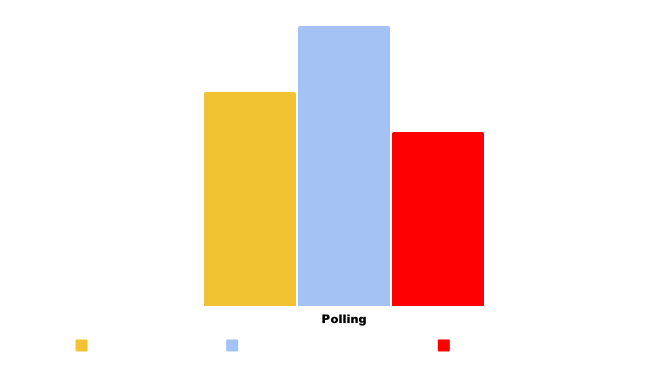
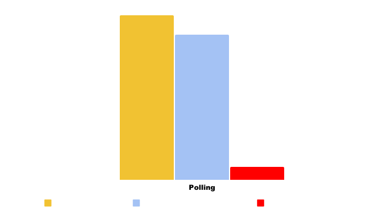

Imagine opening a brand-new app you've just downloaded. It asks you for your preferences, and after a little setup, you're in. But wait - nothing is like you wanted. All the icons are massive, the language is Urdu, and many options are wrong. It doesn't show you what others chose, it doesn't adapt, and if your option isn't the most popular - even slightly - you're ignored entirely. It's like every app had a yearly vote on light vs dark mode - and whichever won became mandatory for everyone for the whole year.
That's First Past the Post - the voting system behind the two most democratic countries in Europe: the United Kingdom, and Belarus. I am of course being unserious - having the same voting system as an authoritarian dictatorship is not something a single person in this country should be proud of.
First Past the Post is a simple system - a common reason brought up in its defence, which I will address later. Voters vote on a list of candidates, and the candidate with the most votes wins. Sounds good enough, right? Why doesn't it work? Well, to demonstrate, here is an example I made.
 Here, 53% of the country supports either Louis or Sam, and 47% of the country supports either Caroline or Ronald.The Disastrous Concept of Tactical Voting
Louis knows he can't win without Sam's supporters. So, Louis and his team encourage "Tactical Voting" - that is, many of Sam's supporters should vote for Louis, to stop Caroline from winning. They claim, "Sam can't win here, it's a race to stop Caroline!" Caroline's supporters will do the exact same with Ronald's supporters. This usually works more effectively on the left wing of politics, especially in the UK, and now Louis is elected over Caroline! The problem, however, is the picture this paints. You'll end up with an election result resembling something like:
which as we've established above, does not represent the true wishes of the voters. While a larger proportion of the public actually support Sam, you can't see this in the election results, and it seems they are significantly less popular! You'll end up under-estimating candidates who have a lower chance of winning, and it will inevitably slide towards a two-party system, as we see in the US and the UK today.
Tactical voting saw a huge rise in name recognition over the July 2024 UK election, with websites such as tactical.vote and stopthetories.vote saying it was the only way to stop the Tory party or Reform. Don't get me wrong - tactical voting 'works'. It often prevents, temporarily, the bad candidates from getting in. But then what? You haven't stopped the rise in popularity of the bad candidates, all you have done is cripple the good voters by forcing them to compromise and vote for a candidate they don't truly believe in.
People Who End Up Not Voting
If You Don't Do Politics, Politics Will Do You
Because of this depressing atmosphere where you're eternally forced to compromise and give up the values you believe in, it's understandable that some people will resign themselves to not vote. Whether it is because they believe their vote "does not count", or they "don't believe in the system" and want to protest it, I think this is misguided.
People who refuse to talk about things because they're 'political' are, in my view, like people who complain about bugs in apps without submitting bug reports to the developers. It is often said that 'if you don't do politics, politics will do you', and I believe this strongly. If you use the roads in your country, if you've been to a hospital in your life, if you've been to school, if you have children, relatives, anyone who receives any benefits, you need to care about politics. If you do not vote, but you proceed to complain, you can surely see the misalignment of logic present there.
So, I believe we need compulsory voting. If citizens are given the ability to opt out of voting (as in the UK or the US), this will often be exercised by people too busy or too apathetic to vote. This includes single mothers busy with childcare, workers with busy shifts, and many other vulnerable demographics who would find it hard to take time out of their day to vote. The day of the election should be a national holiday to ensure everybody who wants to vote is able to, and voting should be compulsory and strongly encouraged. This way, the current demographic of retired people who routinely vote, can finally be joined by the working-class and younger population.
We also need to rid ourselves of this stigma that 'politics' is a dirty word. It doesn't have to be all corruption, complicated policy talks, and detailed debates. Politics, for most people, is simply a game of empathy. If you care about other people, the more you will discover other people care about you - if you are apathetic, don't vote, and are disengaged, the more you will become socially isolated. It is true that the system fails many people. But many more have the opportunity to participate in one of the greatest human inventions - democracy.
And it is for this crucial reason we need to show people that their votes count. First Past the Post creates this toxic atmosphere and sense that your vote is 'wasted'. And they're right - your vote has the potential to be wasted however you vote under FPTP, even if you vote tactically. This is terrible user experience design. What is the point of a system where the majority of users' input ends up being wasted?
After the 2024 election in the UK, 6 out of 10 citizens were represented by an MP they did not vote for.. This is clearly unsustainable.

So, What Are The Alternatives?
Well, there's proportional representation. Proportional representation isn't one specific voting ruleset - it's the general idea that a parliament should be representative of the people who elected it. Proportional representation, as a concept, should be what living in a democracy means. It means that your interests are represented 'proportionally'. If 30% of users want light mode and 70% want dark mode, 30% of users get a light mode app, and 70% of users get a dark mode app. If 30% of voters vote for Party A, and 70% of voters vote for Party B, then the parliament should be roughly in that proportion.
The German System (Mixed Member Proportional)
In Germany, when voting for the members of the Bundestag (Parliament), voters have two votes. The first vote is for your local candidate, who is usually associated with a party. The second vote is for a 'Party List' - there's no local candidates here, you just place a single vote for a party.

A German ballot card
The system used for the 'first' vote is, admittedly, First Past the Post. This way, voters still get a local representative from their region / constituency. With a purely proportional system, you'd lose the aspect of a local MP, and this is how Germany prevents this issue.
The key to the German system however is the second vote. Any party that received at least 5 percent of the vote (electoral threshold) receives representation in the Bundestag, representative to the vote share they received. The local wins based on the first vote are then scaled using the second vote to attempt to increase proportionality and fairness.
This way, even if you want to do tactical voting locally to prevent a bad candidate from winning, you can still also vote for your preferred party without worrying about "wasting" your vote.
This system is known as Mixed Member Proportional, and is used in countries like Germany, Hungary, New Zealand, and Korea. Variations of it, such as Parallel Voting, where often 50% of MPs are elected via First Past the Post, and the other 50% are elected via Party List Proportional, are used in countries like Ukraine, Italy, Japan, the Philippines, Russia, and Lithuania.
Scotland and Wales
It's not just dozens of countries internationally though - both Scotland and Wales use the "Additional Member System (AMS)" for their parliaments, which is a type of Mixed Member Proportional, where voters get two votes (Wales will soon switch to an even more proportional system). Not only that, the London Assembly uses the same system!The Irish System (Single Transferable Vote)
In Ireland, voters use the Single Transferable Vote (STV) system — a model often praised for being one of the fairest and most representative. Here's how it works: instead of choosing just one candidate, voters rank them in order of preference — 1st, 2nd, 3rd, and so on. If you've been following the news lately, this is similar to the Ranked Choice Voting model used in the New York Mayoral Primary.
In Single Transferable Vote however, unlike Ranked Choice where there is only one Mayor to elect, each constituency elects multiple representatives. Candidates must reach a minimum quota of votes to get elected, and if they reach that quota, their surplus votes are given to other candidates based on the voter's ranking card. The candidates with the fewest votes are also eliminated and their votes are redistributed.
The result? A much better user experience for the voters. Fewer 'wasted' votes, better representation, and drastically reduced pressure to vote tactically. If your favourite candidate doesn't make it, your vote still counts. This also, coincidentally, makes for a much friendlier campaigning environment. If you're canvassing for Sam, and you meet a candidate who prefers Louis, you don't have to argue with them - you can say: "Amazing! I love Louis too! Rank Louis #1, and then you can rank Sam #2!" This will ensure voters who want to vote for Sam can do so, knowing that their votes will flow to Louis in the case it comes down to a two-horse race between Louis and Caroline.
This system is also used in Malta and some Australian elections, and has been trialled in places like Scotland for local elections. And despite being slightly more complex, voters routinely understand and engage with it - proving that pure simplicity isn't everything when it comes to good design.
But Aren't These Systems More Complicated?
A common argument for First Past the Post is: "It's simple. Voters don't want to be taught anything else." But simplicity is not the same as usability - think about when you're trying to find an option in a help centre or a settings menu, and it's just not there. Sometimes websites have sleek, minimalist navigation options, and hide complicated settings deep down for the sake of "simplicity" - but this often makes for bad user experience, if the options are frequently needed. Furthermore, voters recognise and reject the distorting effect of First Past the Post, with a majority supporting PR - only 26% want to retain the current system. Reform of the system is frequently mentioned in the top five most important issues to voters.
As any good designer knows, the real goal is clarity and usability, not just minimalism. STV and proportional systems might seem more complex on the surface, but they produce results that make a lot more intuitive sense to voters. That's the difference between modern calculator apps and the abacus - one is simpler, but the other is clearly more functional - and it is the key to voters' disillusionment in the UK electoral system.
Each implementation of proportional representation has its own quirks. Mixed Member Proportional is only half proportional - but it makes this sacrifice to provide citizens with a local MP, something in which pure proportional representation fails. STV requires multiple representatives for each region to be ideally proportional - something voters in Ireland are used to, but may not be intuitive to everybody. No system is quite perfect - but we have to keep trying.
Design Democracy Like You'd Design an App
If we designed our democratic system like we design good apps, First Past the Post wouldn't even survive the first usability test. Too many dead ends, too little feedback, too little user choice.
We'd look for better systems. Systems that have user intent and feedback built into them naturally. With fallback mechanisms (like second preferences), responsive outcomes (like proportional representation), and better error tolerance (like how MMP avoids total domination by one party.)
Especially in the case of voting being made compulsory, the systems need to make sense to every single person who is trying to use them - but that doesn't mean dumb them down. It means make sure people's votes matter, and make sure voters don't feel like they're being ignored.
The future of voting isn't just a political problem, in my view. It's design. And we deserve better design.